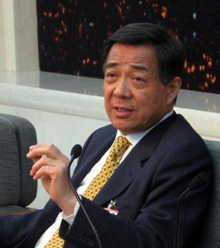
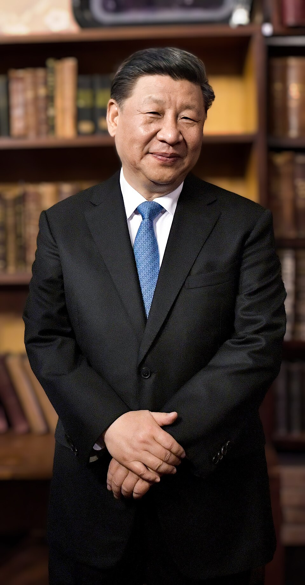
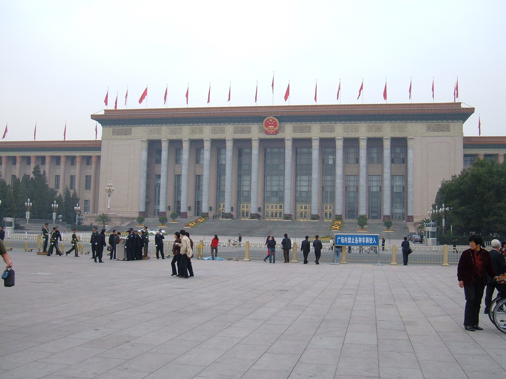

Una década de liderazgo colectivo terminó con un escándalo de corrupción que el Partido leyó como una amenaza existencial. La respuesta fue entregarle a un solo hombre el poder que Deng Xiaoping había repartido deliberadamente entre varios, y en 2022 ese hombre salió del Congreso sin haber nombrado sucesor.
Toca cada acto para expandirlo.
Antes de 2012, el sistema político de la RPC operaba bajo un modelo de liderazgo colectivo e institucionalización defensiva heredado de la era de Deng Xiaoping. El poder en la cúpula se distribuía mediante un equilibrio de facciones —"un partido, dos coaliciones"—, divididas principalmente entre la Facción de Shanghái (liderada por Jiang Zemin y vinculada a los princelings) y la facción Tuanpai (vinculada a la Liga de la Juventud Comunista y liderada por Hu Jintao).
Durante la década de Hu Jintao (2002-2012), el Comité Permanente del Politburó funcionaba por consenso bajo una lógica de "primero entre iguales". Sin embargo, este equilibrio institucional degeneró en una seria fragmentación del poder estatal, feudos burocráticos independientes, parálisis en la toma de decisiones y una corrupción desenfrenada que amenazaba la legitimidad y la supervivencia del PCCh.
La crisis de legitimidad y de sucesión estalló entre 2012 y 2013, dinamitada por el escándalo de Bo Xilai —líder del PCCh en Chongqing— y las redes de corrupción de Ling Jihua, jefe de la Oficina General de Hu Jintao, y Zhou Yongkang, zar de la seguridad interna.

Ante el temor explícito de que la indisciplina interna llevara al colapso del régimen, la élite del PCCh otorgó a Xi Jinping en el 18º Congreso Nacional (2012) un mandato de mano dura para restaurar la disciplina y rescatar al Partido. Xi asumió simultáneamente la Secretaría General del PCCh, la Presidencia de la Comisión Militar Central y posteriormente la Presidencia de la República, iniciando de inmediato una ofensiva para desmantelar las redes faccionales rivales.

A través de la Comisión Central de Inspección de la Disciplina, Xi sancionó a más de 1.4 millones de miembros del Partido, desmantelando centros de poder rivales en el ejército (Guo Boxiong, Xu Caihou), la seguridad (Zhou Yongkang) y los feudos provinciales (Sun Zhengcai).
Xi desvió la toma de decisiones clave fuera del Consejo de Estado creando y liderando "Comisiones Centrales" —Reforma, Seguridad Nacional, Asuntos Financieros, Gobernanza Basada en la Ley— que respondían directamente a él.
Se abolió el límite de dos mandatos presidenciales, se constitucionalizó la primacía del Partido, se creó la Comisión Nacional de Supervisión y se inscribió el "Pensamiento de Xi Jinping" al nivel histórico de Mao Zedong.
En el 20º Congreso Nacional del PCCh (2022), Xi rompió las normas no escritas de jubilación ("7 arriba, 8 abajo"), forzó el retiro de las figuras clave de la facción Tuanpai —Li Keqiang y Wang Yang— y rellenó el Politburó y el Comité Permanente exclusivamente con leales de su propia red (Li Qiang, Cai Qi, Ding Xuexiang, Li Xi, Zhao Leji, Wang Huning), sin designar ningún sucesor.

Se erradicó el principio de "separación entre Partido y Gobierno" (dang zheng fenkai). Con las nuevas reglas de trabajo del Consejo de Estado aprobadas en 2023 bajo el primer ministro Li Qiang, el gobierno quedó definido explícitamente como un mero ejecutor administrativo de las decisiones dictadas por el Centro del Partido.
Se instituyeron los principios obligatorios de los "Dos Establecimientos" (establecer a Xi como núcleo y a su Pensamiento como guía) y los "Dos Salvaguardas" (proteger la autoridad centralizada de Xi). La gobernanza se reorientó hacia la "Seguridad Nacional Holística", la autosuficiencia tecnológica y el control ideológico sobre el sector privado, los medios y la sociedad civil.
Retorno a la dictadura personalista. La concentración del poder político, militar e ideológico en las manos de un solo hombre ha debilitado la previsibilidad de las transiciones de liderazgo, reviviendo los riesgos asociados al gobierno personalista y a la falta de contrapesos internos.
El Partido lidera todo. Xi ha formalizado que "el Partido lidera todo" —en la política, la economía, la tecnología, la cultura y la defensa— redefiniendo la legitimidad política bajo la narrativa de la "Democracia Popular en Todo el Proceso" y el "Gran Rejuvenecimiento de la Nación China".
La ausencia de un sucesor aparente en el Comité Permanente y la erradicación del equilibrio de facciones crean una alta incertidumbre a largo plazo, exponiendo al sistema a una potencial crisis de sucesión cuando Xi finalmente deje el escenario: el mismo riesgo que Deng Xiaoping diseñó el liderazgo colectivo para evitar.
Más de 1.4 millones de sancionados no es solo limpieza administrativa: es el mecanismo con que se desmantelaron todas las redes de poder rivales a Xi.
Desde 2023, el Consejo de Estado es formalmente un ejecutor, no un par: la separación Partido-Gobierno que Deng diseñó en los ochenta ya no existe.
El 20º Congreso de 2022 copó el poder sin nombrar heredero, dejando a China con la misma pregunta abierta que enfrentó tras la muerte de Mao.
Contenido curado por el equipo de Club Kongzhi a partir de fuentes académicas reunidas en el cuaderno de NotebookLM dedicado a Xi Jinping y la recentralización política.